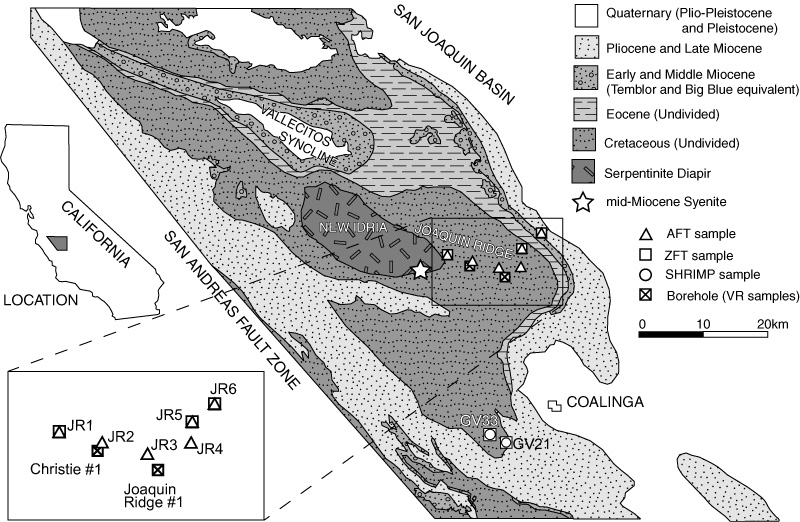
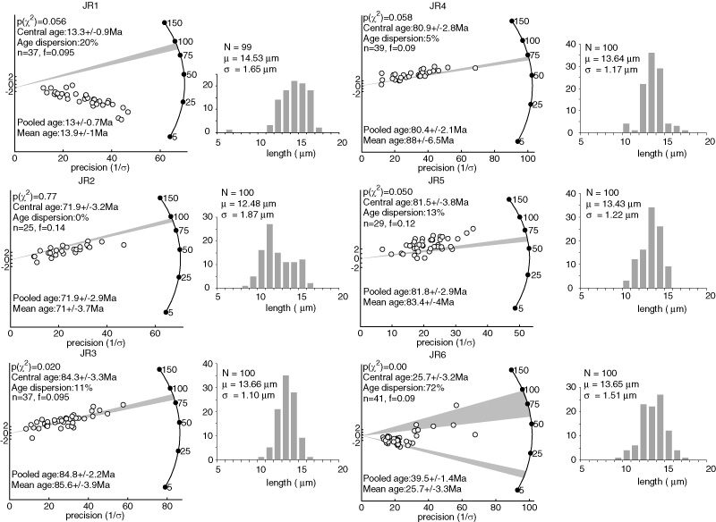
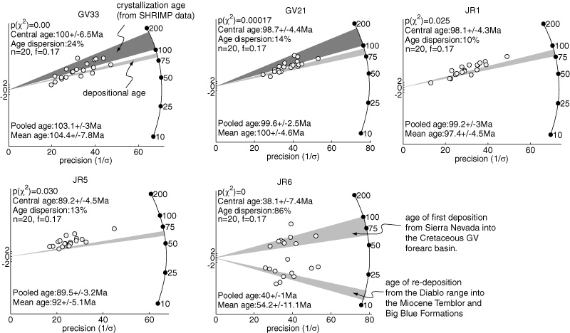
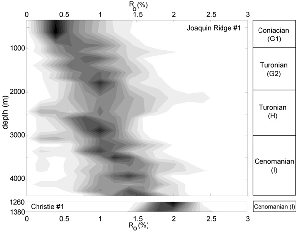
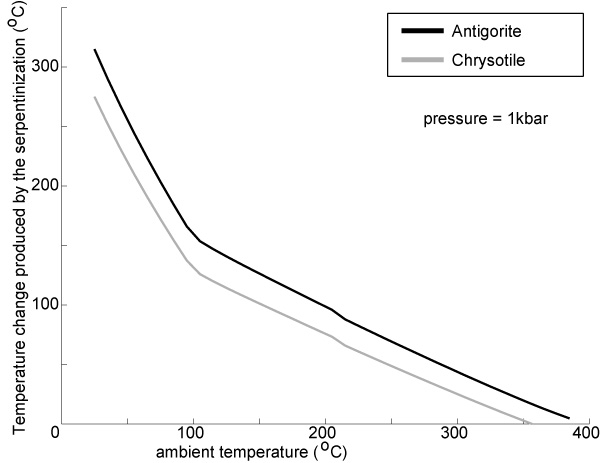
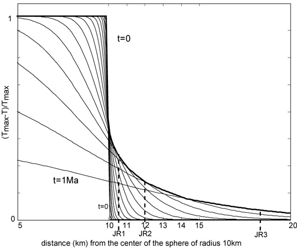
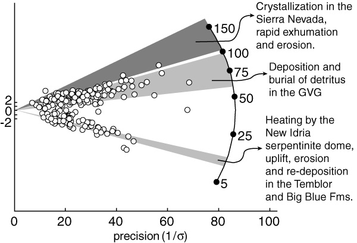

|
MULTI-METHOD DETRITAL THERMOCHRONOLOGY OF THE GREAT VALLEY GROUP NEAR NEW IDRIA, CALIFORNIA Pieter
Vermeesch1,
Donald D. Miller
2,
Stephan A.
Graham3,
Johan De
Grave4,
Michael O.
McWilliams5
Abstract The simultaneous use of several thermochronological methods on replicate sedimentary rock samples can reveal their pre- and post-depositional history. Single grain U/Pb dating of zircon, zircon and apatite fission track dating and vitrinite reflectance measurements were performed on Cretaceous through Miocene sedimentary rocks of the Great Valley Group and the Temblor Formation near Coalinga and New Idria, California. The data show that the Sierra Nevada was exhumed and cooled at ~0.5-1km/Ma or ~20oC/Ma during the Cretaceous. After deposition in the Great Valley forearc basin, Sierra Nevada erosional products were buried at great depth under low thermal gradients. At ~12-14 Ma, northward progression of the Mendocino triple junction triggered folding on the eastern flanks of the California Coast Ranges and rapid exhumation of the New Idria serpentinite diapir. This Middle Miocene event caused the deposition of spectacular deposits of sedimentary serpentinite (Big Blue Formation). The rapid rise of the hot serpentinite body created a thermal pulse that may have provided the enigmatic heat source for oil fields in the shallow Vallecitos syncline, a few kilometers north of New Idria. INTRODUCTIONThe topography and geology of central California are dominated by petrotectonic elements of the
Mesozoic convergent margin: the Sierra Nevada magmatic arc, the Great Valley forearc basin, and the
Franciscan accretionary prism. These three domains are genetically linked, inasmuch as they were jointly
formed by Pacific plate subduction beginning in the Late Jurassic (Dickinson et al., 1996), until the
transformation of the subduction zone into a transform margin during the Late Cenozoic (Atwater, 1970).
The upper Mesozoic strata of the Great Valley Group (or Sequence: Bailey et al., 1964) filled the forearc
basin, and comprise one of the thickest sequences of Cretaceous sediments known (Ingersoll, 1982). These
Great Valley Group strata crop out in a homocline along the western margin of California’s Central
Valley, and are in fault contact with the Franciscan accretionary complex (Dickinson et al.,
1996).

Figure 1: Simplified geologic map of the Great Valley Group near Coalinga with the sample
locations. Modified from Bate (1985).
This paper focuses on samples of the Great Valley Group collected in and around Joaquin Ridge near
Coalinga (Figure 1). These sedimentary rocks contain geochronological and petrographic information
about the evolution of their source region, the Mesozoic Sierra Nevada magmatic arc. They also contain
clues about their post-depositional history, and the tectonic evolution of the Diablo Range in which they
are now exposed. Conventional petrographic studies of Great Valley Group rocks indicate that, with time,
the lithic fraction of the sediments decreased, the percentage of total feldspar increased and the
composition of the feldspars became more potassic. These trends reflect increasing chemical and
geomorphic maturity of the magmatic arc (Ingersoll, 1979, 1983). Paleocurrents are dominantly
west-directed, indicating that the source was the southern Sierra Nevada (Ingersoll, 1979).
In addition to conventional petrographic studies, samples in the vicinity of Coalinga were
studied by bulk-rock ϵNd and ϵSr analysis (Linn et al., 1991, 1992), confirming the petrographic
results. Between Cenomanian and Maastrichtian time, ϵNd systematically decreased from
-0.7 to -5.0 (Linn et al., 1991), reflecting an eastward migration of the drainage divide, to
where the Sierran magmas are more continental in composition (De Paolo, 1981). Some of
the samples of Linn et al. (1991) were used by DeGraaff-Surpless et al. (2002) for SHRIMP
single grain zircon U/Pb age measurements, which confirmed that the sediment source for the
Great Valley Group in the San Joaquin Valley is the southern Sierra Nevada, as the most
frequently observed ages are 102-132 Ma. The spread of the Mesozoic ages and the number
of peaks in the grain-age histograms increase with decreasing depositional age. This may
reflect an expansion of fluvial drainage basins, resulting in a larger sediment source area.
The minimum lag-time between the age of zircon crystallization and deposition (determined
by paleontology) is short (3-15 Ma). This constrains the Late Cretaceous exhumation rate
of the Sierra Nevada (Surpless, 2001) – constraints that this paper will attempt to refine.
Nevertheless, considerable controversy exists about the exhumation history of the Sierra Nevada
batholith. Some workers, based on the observation of uplifted and tilted Cenozoic strata,
believe that the development of Sierran topography occurred in the last 10 My (e.g., Unruh,
1991). Others claim that significant topography existed since at least the Early Cenozoic
based on old (U-Th)/He cooling ages of the Sierra Nevada granites, and the fact that the
spatial distribution of these ages preserves the signature of old topography (House et al., 1998,
2001). Both opinions are based upon data acquired from rocks of the modern Sierra Nevada.
They seldom make use of the continuous record of sediments shed from the ancient mountain
range since the Late Jurassic. These sediments are excellent “witnesses” of the evolution of
the Sierra Nevada, for much of the batholith and its volcanic carapace have long since been
removed. Detritus from the Sierra Nevada was deposited in the Great Valley forearc basin. Above these strata
was deposited a gradually shoaling-upward succession of Cenozoic deposits (Dibblee, 1971; Bartow, 1991).
A total thickness of 6000-8000m of the Upper Jurassic through Cretaceous Great Valley Group is exposed
in a homocline on the eastern flanks of the Diablo Range (Dickinson, 2002). Superimposed on this
homocline are folds formed as a result of right-lateral transpressional strike-slip deformation along the San
Andreas fault (Miller, 1998). The Vallecitos syncline is one of these synclinal folds (Figure 1). Cenozoic
strata contain petroleum, although they are buried less than 1500m deep in the syncline (Rentschler,
1985). The heat source for oil generation is enigmatic. Joaquin Ridge forms the anticline adjacent to the
Vallecitos syncline. The New Idria serpentinite body is exposed in the core of this anticline. A few small
intrusions of syenite crop out in the serpentinite body, and are dated at ~12.8 Ma (no error
stated) by 40Ar/39Ar dating on the amphibole barkevikite (Obradovich et al., 2000). Rb-Sr
dating of benitoite yielded an age of ~ 12 Ma (no error stated) (Obradovich et al., 2000).
The Mendocino triple junction passed the latitude of New Idria at ~12-14 Ma (Johnson and
O’Neill, 1984). ~14 Ma is also the age of the spectacular deposits of the Big Blue Formation,
which consist almost solely of sedimentary serpentinite (Casey and Dickinson, 1976; Bate,
1985). In the following sections, new fission track and vitrinite reflectance data are presented, followed by a discussion of implications of these data. To reconstruct the pre-depositional history of sediments, they must not be thermally reset. Therefore, the post-depositional history of the New Idria area will be discussed first. Among other conclusions we demonstrate that, until the rapid exhumation of the serpentinite dome, this area was characterized by low thermal gradients that prevented the buried sediments from being heated very much. The discussion of the pre-depositional history then follows. This paper illustrates the great power of simultaneously using multiple thermochronometers on detrital sediments. Each individual thermochronometer only tells part of the story, but the whole is greater than the sum of the parts. When all evidence is jointly considered, a self-consistent story emerges that traces the sediments from their crystallization in the Cretaceous Sierra Nevada until the final stages of their exhumation on Joaquin Ridge. This story not only has consequences for the regional geology of the Coalinga/New Idria area, but also for the tectonic history of the Sierra Nevada and the petroleum geology of the Vallecitos syncline. METHODSFigure 1 shows a simplified geologic map of the field area with indication of the sample locations. Some of these samples were previously discussed by Linn et al. (1991, 1992) and DeGraaff-Surpless et al. (2002). They are labeled with the letters “GV”. An additional six samples were collected along a transect on Joaquin Ridge and are labeled with the letters “JR”. Table 1 summarizes the geochronological data. Apatites and zircons were separated from their host rock using the mineral separation techniques reported by DeGraaff-Surpless et al. (2002). All samples yielded abundant euhedral apatites and zircons. Both zircon and apatite fission track ages were measured with the external detector method (e.g., Dumitru, 2000). Figure 2 shows the apatite fission track data from Joaquin Ridge, arranged in order of decreasing stratigraphic age. Five of six samples on Joaquin Ridge came from the Great Valley Group, while the youngest sample (JR6) came from the Middle Miocene Temblor Formation, beneath the Middle Miocene Big Blue Formation. Figure 3 shows five zircon fission track samples labeled and arranged in decreasing order of stratigraphic age like the apatite fission track ages of Figure 2. The dark gray bands on the radial plots of samples GV21 and GV33 mark the range of crystallization ages measured by U/Pb SHRIMP dating (DeGraaff-Surpless et al., 2002). The light gray bands mark the depositional ages (Dibblee, 1971). Between n=20 and n=41 grains were dated per fission track sample. The probability p that either the oldest or the youngest population fraction of size f was missed by all n grains is given by:
For example, if n=30 and f=0.12, then p=5%. In other words, there is 5% chance that either the youngest or the oldest 12% of the detrital population was missed. In addition to the aforementioned outcrop samples, we also had access to material from two boreholes on Joaquin Ridge, the ARCO “Christie #1” and ARCO “Joaquin Ridge #1” wells. Vitrinite reflectance measurements were performed on 23 well cutting samples from “Joaquin Ridge #1” and three core samples from “Christie #1”. Up to 100 reflected light points were measured on the vitrinite populations represented in each sample. The lowest reflectance values likely reflect contamination from organic matter in the drilling fluid, while some of the higher reflectance values may represent resedimented vitrinite. However, rather than arbitrarily rejecting some data, we have opted to just contour and plot all the data (Figure 4). The raw data for both the fission track and the vitrinite reflectance analysis are available in the Data Repository 1 1Data Repository item 2005xxx.
Table 1: Summary table of geochronological data. U/Pb dating was performed on zircon and
fission track dating on both zircon (ZFT) and apatite (AFT). All fission track ages are central ages
(Galbraith and Green, 1993) except for JR6 (*), for which the two best fitting component ages are
reported, calculated with the binomial peak fitting routine of Brandon (1996).
DISCUSSION
Fission track dataApatite fission tracks are immediately annealed at temperatures >~110oC (e.g., Wagner and Van den
Haute, 1992). At temperatures less than about 60oC, apatite fission tracks are completely
preserved. The temperature zone between ~60 and ~110oC is named the apatite fission track
partial annealing zone (e.g., Dumitru, 2000). In this zone, fission tracks are not immediately
annealed, but gradually shortened with time. The annealing temperature of zircon fission tracks is
more controversial, but generally considered to lie between 230 and 310oC (see discussion by
Tagami and Dumitru, 1996). In this paper, we will assume the more “conservative” value of
~230oC.

Figure 2: Apatite fission track radial plots (Galbraith, 1990) of the Joaquin Ridge. The gray bands
represent depositional ages. The histograms show the fission track length distributions. n = number
of grains, f = largest population fraction of older/younger grains that are p=5% likely to have been
missed, N = number of confined tracks.
First, we will discuss the apatite fission track data (Figure 2). Of the five Great Valley Group samples,
four have exclusively Cretaceous apatite fission track grain-ages, indicating that these grains never reached
temperatures greater than 110oC since their deposition in the Great Valley Group. However,
sample JR2 has the oldest depositional age of these four samples but the youngest fission track
ages, with the latter being even slightly younger than the former. Therefore, JR2 has been
partially reset, and saw temperatures less than ~110oC, but well above ~60oC. The fission tracks
of sample JR2 are also significantly shorter than those of the other samples, an additional
suggestion that JR2 must have been heated to well within the partial annealing zone. Sample
JR1, located the nearest to the New Idria serpentite, has completely annealed apatite fission
tracks and, therefore, was heated above ~ 110oC. It dates the end of the heating event at ~14
Ma. Sample JR6 from the Miocene Temblor Formation contains two age components: one
Cretaceous and one Miocene component (Table 1). There also is a hint of bimodality in the fission
track length distribution. A first group of relatively short (~9-13 μm) fission tracks formed
prior to the mid-Miocene. These tracks preserve Sierran provenance ages but were partially
annealed during the mid-Miocene thermal event. A second group of long fission tracks (~13-17
μm) formed after this thermal event, and have not been annealed since then. Paleocurrent
directions in the Temblor and Big Blue Formations are west-to-east, which is the opposite flow
direction as for the Great Valley Group (Casey and Dickinson, 1976; Bate, 1985; Bent, 1985).
Therefore, the apatite grains of the Temblor Formation have been redeposited from the underlying
Great Valley Group, some of which was thermally annealed during a mid-Miocene thermal
event.

Figure 3: Zircon fission track radial plots. As in Figure 2, the light gray bands represent depositional
ages. The dark gray bands mark the crystallization ages, as measured by DeGraaff-Surpless et al.
(2002) using the U/Pb method on zircon. n and f as in Figure 2.
The zircon fission track ages for four of the five samples are older than the age of Great Valley Group deposition (Figure 3). Sample JR1, which had completely annealed apatite fission tracks, also has unreset zircon fission track ages. Therefore, sample JR1 was heated to more than ~110oC, but less than ~230oC after its deposition. The lag between crystallization, exhumation and deposition times were short, which means that the source area of these sediments exhumed rapidly. The most surprising observation is that the Middle Miocene sample JR6, which had a bimodal apatite fission track age distribution, also has a bimodal zircon fission track distribution. The oldest mode of Mesozoic ages is compatible with the unreset fission track ages of the Joaquin Ridge samples located away from the serpentinite body (Table 1). The youngest age peak is concordant with the ~14 Ma apatite fission track age of sample JR1, and with the youngest mode of the apatite fission track age distribution of JR6. Because not all the apatite grains in JR6 were reset at ~14 Ma, we know that this sample was not heated to more than ~110oC. In fact, there is ample evidence that the Temblor formation did not see temperatures higher than ~56oC east of Joaquin Ridge (see below). Therefore, the ~14 Ma old zircons must have been been annealed prior to deposition in the Temblor and Big Blue formations. Recalling the eastward paleocurrents of these deposits, this indicates that at least part of the provenance area for the Temblor Formation, which is Joaquin Ridge, reached temperatures as high as ~230oC as recently as ~14 Ma. Vitrinite reflectance data
Figure 4: Contoured vitrinite reflectance results for two wells on Joaquin Ridge (for their location,
see Figure 1).
Additional evidence for a heating event comes from vitrinite reflectance data from two wells on Joaquin Ridge (see Figure 1 for the location of the wells, and Figure 4 for the vitrinite reflectance data). The “Joaquin Ridge #1” well is 4,390 m deep and located in the vicinity of sample JR3. The “Christie #1” well is 1,380 m deep, and located next to sample JR2. Micro-paleontological ages have been obtained for both wells (Martin B. Lagoe, written communication). “Joaquin Ridge #1” sediments are of Coniacian (at 910 m) to Cenomanian age (at TD), whereas the “Christie #1” samples at TD are Cenomanian (Figure 4). Twenty-three samples from the “Joaquin Ridge #1” well were analyzed, from depths of 300 to 4,390 m. They show Ro values of 0.6-1.5%, explaining why apatite fission track samples JR3, JR4, and JR5 have not been thermally reset. These samples are all located upsection from the shallowest “Joaquin Ridge #1” vitrinite reflectance samples and should, therefore, correspond to Ro values < 0.6%, or maximum paleo-temperatures less than ~85oC (Sweeney and Burnham, 1990). The “Joaquin Ridge #1” vitrinite reflectance data imply a thermal gradient of ~14 oC/km, which was normal in the Great Valley forearc basin (Dumitru, 1988). There exists substantial evidence that the geothermal gradient in the Great Valley Group was very low during the Cretaceous and the beginning of the Tertiary. This is postulated to have been caused by the refrigerating effect of the subducting Farallon pLate (Dumitru, 1988). The “Christie #1” well is located near sample JR2. Three cores taken in “Christie #1” at 1,250-1,380 m are characterized by vitrinite reflectance values of ~1.9-2.0%, or maximum paleotemperatures of ~180oC, very hot for the Great Valley Group. However, apatite fission track sample JR2, located about 1,500-2,000 m upsection from the “Christie #1” vitrinite reflectance samples, has not been reset. Assuming a thermal gradient similar to that inferred from the “Joaquin Ridge #1” well, this would lower the predicted vitrinite reflectance value for sample JR2 to about Ro = 1.3% (maximum paleo-temperature ~150oC). This rough estimate, if correct, conflicts with the observation that apatite fission track sample JR2 has not been completely annealed. This would imply that the high Ro values of “Christie #1” are due to a thermal anomaly, that the thermal gradient in this well was not equal to that of “Joaquin Ridge #1”, and/or that this gradient was not linear. Although not reset, sample JR2 has been at paleo-temperatures above those of samples JR3, JR4, and JR5. The high paleo-temperatures of the “Christie #1” samples are unlikely to be the result of simple burial, but are instead interpreted to be the result of a Middle Miocene heating spike, associated with the upward protrusion and tectonic denudation of the New Idria serpentinite body. IMPLICATIONS FOR THE POST-DEPOSITIONAL HISTORY OF THE GREAT VALLEY GROUPPartial annealing of apatite fission track sample JR2 and complete annealing of JR1 at ~14 Ma by burial-induced heating alone is improbable for at least two reasons:
An alternative explanation for the vitrinite reflectance and fission track data is that the Great Valley
Group was heated by the serpentinite diapir. Three lines of evidence suggest that the serpentinite body
was hot when it breached the surface. Most importantly, mineral assemblages of Franciscan inclusions in
the serpentinite body indicate that it rose from depths of as much as ~20 km which, even under the
lowest thermal gradients, would make them relatively hot (>200oC; Coleman, 1996). Secondly, the
serpentinite diapir rose very rapidly. Evidence for the massive size and sudden nature of this event is
contained in the Middle Miocene Big Blue Formation, which crops out ~15 km east of the
serpentinite dome. The Big Blue Formation consists almost entirely of serpentinite clasts, some of
which are house-sized (Anderson and Pack, 1915). Paleocurrents indicate flow towards the
east, in the opposite direction of the “normal” Great Valley Group paleocurrents (Casey and
Dickinson, 1976; Bate, 1985). The facies gradient from sheared protrusive serpentinite through
braided stream deposits to marine tidal flat facies evinces an eastward facing paleoslope (Bate,
1985). The fluvial deposits preserving paleocurrents were shed from the gradually spreading
flank of a New Idria serpentinite protrusion that breached the suface to form a dome-like
mass that spread laterally as additional serpentinite was supplied to the surface by upward
diapiric flowage from within the crust. If the serpentinite body rose to the surface extremely
rapidly, it is likely to have remained hot all that time. Finally, serpentinization reactions are
exothermic: Antigorite: 34Mg2SiO4 + 51H2O → Mg48Si34O85(OH)62 + 20Mg(OH)2 Chrysotile: 2Mg2SiO4 + 3H2O → Mg3Si2O5(OH)4 + Mg(OH)2 Both of these reactions require a lot of water. This could be the reason why the serpentinization did not happen before the Middle Miocene. At that time, the Mendocino triple junction passed the latitude of Coalinga. The faulting and folding caused by the San Andreas fault might have introduced a pathway for fluids in the ophiolitic crust that underlies the Great Valley Group. Both the reaction enthalpy ΔH of the serpentinization reactions and the heat capacity Cp of the serpentinite minerals vary with temperature (Holland and Powell, 1998). At the conditions relevant to the New Idria serpentinite dome, the pressure effect is negligible. Making the simplifying assumption that serpentinization of the entire body occurred at the same time, we can calcuLate a first-order approximation of the maximum temperature increase that could be caused by the serpentinization:

Figure 5: Serpentinization reactions are less exothermic as the ambient temperature increases.
The New Idria serpentinite body must have been relatively hot for one of two reasons: (1) it formed
under high ambient temperatures, or (2) it generated the heat itself.
The evolution of this reaction temperature as a function of ambient temperature is shown in Figure 5. The lower the ambient temperature, the more exothermic the serpentinization reactions are, but above a few hundred degrees, they can even become endothermic. The buffering thermodynamics of the serpentinization reactions are such that the serpentinite body must have been hot when it formed, either because the ambient temperature was high or because of its own reaction heat. A rough estimate of the thermal effect that a hot, spherical body the size of the New Idria diapir would have on the adjacent country rock can be calculated assuming simple conductive cooling:
with Ti the initial temperature difference between the serpentinite and the country rock, R the
radius of the sphere (~10km), r the distance from the center of the sphere, κ the diffusivity
(~ 10-6m2/s), and t time (modified from Carslaw and Jaeger, 1959). Figure 6 shows the
result of this calculation. It indicates that during ~106 years after the intrusion of a hot body
the size of the New Idria diapir, the rocks within a few km of the contact would experience
a transient heating spike. Added to the pre-existing background geothermal gradient, this
spike could explain both the vitrinite reflectance data and the apatite fission track annealing
behavior. Thermal halos around protrusive serpentinite bodies of west-central California have
been described by Murata et al. (1979), who traced the Marca Shale Member of the Upper
Cretaceous and Paleocene petroliferous Moreno Shale over a distance of 120 km and found
that biogenic silica in this unit was cristobalitic everywhere, except for the northern flank of
Joaquin Ridge, where it comes within less than 1 km of the New Idria serpentinite body.
This is the only place where quartz-phase silica exists, indicating maximum temperatures
>~ 80oC.

Figure 6: Conductive cooling of a hot sphere surrounded by a cooler material creates a transient
heating signal in the latter. Let the sphere (radius = 10km, left side of the figure) represent the
New Idria serpentinite body, rapidly rising in a Great Valley Group country rock (right side of
the figure) with thermal diffusivity κ = 10-6 m2/s. Then the thin black lines show the evolution
with time (from 0 to 1Ma) of the thermal contact. The thick black line connects the maximum
temperatures reached at different distances. The location of three of the fission track samples is
also marked on the figure.
We have not attempted to rigorously model petroleum generation and trapping in the Vallecitos
syncline, but current studies by the United States Geological Survey may better constrain the petroleum
history (Peters et al., 2005). Nevertheless, various relations provide general constraints on petroleum
generation and accumulation, and thus provide a point of comparison for our interpretation. Biomarkers
recently collected from the Vallecitos oil field by the United States Geological Survey show
biomarker and isotope compositions indicative of Upper Eocene Kreyenhagen source rocks (written
communication, Kenneth E. Peters). However, the small pools in the syncline occur mainly in fault
traps located under the Kreyenhagen Formation (California Division of Oil and Gas, 1982).
Therefore, the Maastrichtian-Danian Moreno Formation might be a more plausible source of these
hydrocarbons. Although not understood in detail, the fault traps likely developed when the
syncline folded in the Late Middle Miocene (Rentschler, 1985). Thus, maturation, migration
and entrapment likely occured no earlier than Late Miocene, consistent with our data and
interpretation. IMPLICATIONS FOR THE CRETACEOUS HISTORY OF THE SIERRA NEVADAMost geochronological methods have a closure temperature (Dodson, 1973). However, in the apatite fission
track method for example, there is not one distinct temperature, but a rather diffuse zone over which the
geochronological system “closes”. Nevertheless, for our purposes, the rather crude concept of a closure
temperature is still useful. For the U/Pb system in zircon, the closure temperature is as high at
~900oC (Dahl, 1997; Miller et al., 2003). The closure temperature of the zircon fission track
method is somewhere between ~230 and 310oC (Wagner and Van den Haute, 1992; Tagami
and Dumitru, 1996). For the apatite fission track method, a closure temperature of ~100oC
can be used, although this value varies with apatite chemistry (e.g., Gleadow and Duddy,
1981). A frequent practice in igneous and metamorphic geochronology is the simultaneous use of several
dating techniques on the same sample. A graph of apparent age versus closure temperature is then used to
estimate the cooling history of such a sample (e.g., Harrison and McDougall, 1980). A similar approach
can be used for detrital samples. Conservatively assuming that the tops of the plutons in the southern
Sierra Nevada were emplaced at 2-3km depth (Ague and Brimhall, 1988), Surpless (2001) argued argued
that the relatively short minimum lag times between the U/Pb zircon ages and the depositional
ages of 3-15Ma indicated rapid exhumation of the Cretaceous Sierra Nevada at rates of ~
0.6-1mm/yr. We can extend this method to the lower temperature thermochronometers of Table
1. If we had access to double-dated grains, as in Rahl et al. (2003), estimating the probability
distribution of provenance cooling rates would be a trivial exercise. However, because of the
uncontroversial provenance of our samples and the fact that the southern Sierra Nevada can be considered
a structurally more or less homogeneous fault block, we might be able to proceed without such data.
Thus, we can get a first order estimate of the cooling rates by looking at the time lag between the mean
(or central) ages of two thermochronological grain-age populations (e.g., ZFT and AFT), or at that
between the mean (or central) age of a grain-age population and the depositional age of the
sample. Doing this for the thermally unreset data of Table 1 yields seven apparent cooling rates which do not show any systematic variation with depositional age. The weighted mean of these estimates yields an apparent cooling rate of ~21oC/Ma. Depending on the thermal gradient (22-40oC/km; Rothstein and Manning, 2003), this then corresponds to exhumation rates of ~0.5-1mm/yr, which agrees with the estimates of Surpless (2001) and Ague and Brimhall (1988). These are rather high rates, but this does not come as a surprise when we consider the amount of sediment deposited in the Great Valley Group at the time.
SUMMARY AND CONCLUSIONS
Figure 7: The history of Joaquin Ridge sediments summarized on a single fission track radial plot,
compiled from all the apatite fission track data.
Figure 7 summarizes the history of the Great Valley Group near Coalinga and New Idria:
ACKNOWLEDGEMENTSThis research was partly funded by GSA student research grant #7298-02 to Pieter Vermeesch. Well cuttings were provided by William Bazeley and ARCO Inc. Vitrinite reflectance analysis was performed by Clark Geological Services and supported by the Stanford Petroleum Geology Industrial Affiliates program (“San Joaquin Project”). Zircon fission track measurements were performed by Paul F. Green of Geotrack International Pty. Ltd. We want to thank Trevor Dumitru for suggestions and help with the apatite fission track dating, Kathy Surpless for discussions and sharing mineral separates, Bob Coleman for discussions and field assistance, and Bill Dickinson and Paul O’Sullivan for useful and insightful reviews.
REFERENCES
|